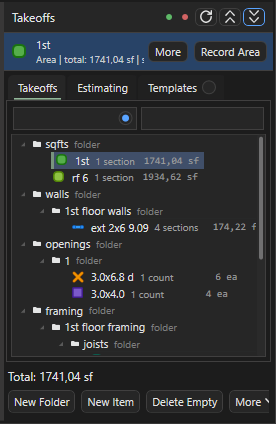
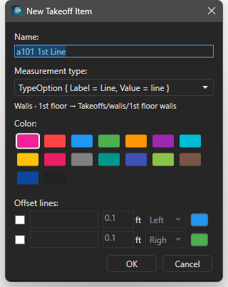
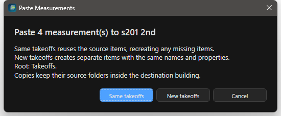
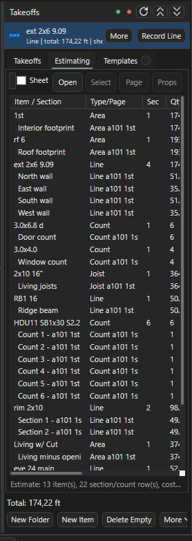
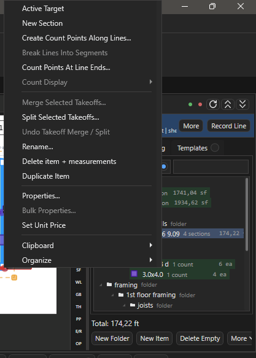

Дерево Takeoffs¶
Здесь: панель Takeoffs, новая позиция и Record, копирование между листами и корпусами, скрытие, поиск, Estimating. Нужно каждый день; канон папок и имён - на Дерево takeoff и имена листов, несколько корпусов и зелёная точка - Несколько зданий.

Record, Total; ниже кнопки и дерево. Вкладки Takeoffs, Estimating, Templates.Панель: справка¶
| Элемент | Что делает |
|---|---|
| Зелёная и красная точки | корень для новых позиций: выбранный корпус или весь Takeoffs (несколько зданий) |
Record (Space), More, Props, Find, Sheet, >, < |
строка активной позиции: продолжить запись, свойства, показать в дереве, выбрать позицию с этого листа, следующая и предыдущая |
> (Switch to next takeoff item), < (Switch to previous takeoff item) |
сделать активной следующую или предыдущую позицию из списка всех позиций проекта, по кругу; статус Active takeoff target 3/12: <имя>. Во время Record не переключают |
More строки активной позиции |
Properties..., Find in Tree, Sheet Targets... (то же, что Sheet), Previous Target, Next Target (то же, что < и >) |
Sheet |
список позиций, измеренных на открытом листе, с количеством; активная помечена *; сверху Next Sheet Target - следующая позиция этого листа |
Total |
итог активной позиции в её единицах |
New Folder, New Item (T) |
папка и позиция под выделенной папкой |
Delete Empty |
удалить позиции без замеров; Ctrl+Z возвращает пакетом |
More |
Roof Base from area, Auto Tree (корни COM-шаблона), From Pages (папки по структуре листов) |
Export |
Save, Save As..., Export CSV, Export TXT, Export Excel, Export to Current Excel |
| Значки в шапке панели | Refresh Takeoffs tree - перечитать дерево из папки проекта, статус Takeoffs tree refreshed.; Collapse all Takeoffs nodes и Expand all Takeoffs nodes - свернуть или раскрыть все папки. Те же команды на правой полосе значков: Collapse Takeoffs Tree, Expand Takeoffs Tree |
| Поиск | левое поле по имени папки, правое по имени позиции или замера; кнопка в левом поле Match takeoff folder case exactly (включена) различает A и a, выключенная ищет без учёта регистра |
| Вкладки справа | Takeoffs, Estimating, 3D (модуль), Templates |
Под каждой позицией в дереве видны секции: замеры по листам; Ctrl+Enter выделяет замеры секции на листе.
| Клавиша | Что делает |
|---|---|
F2 |
переименовать позицию или папку (Rename...) |
Delete |
удалить; Ctrl+Z с фокусом в дереве возвращает |
Ctrl+Up / Ctrl+Down |
порядок в папке |
Ctrl+Enter |
выделить замеры секции на листе |
Ctrl+M / Ctrl+Shift+M |
Merge и Split выделенных позиций (правка) |
Shift / Ctrl + щелчок |
выделить диапазон строк или добавить одну строку |
| протянуть мышь с пустого места дерева | рамка выделения строк; с Ctrl добавляет к выделенному |
Alt + протянуть со строки |
рамка, начатая прямо со строки (в F1: Start marquee selection from a row); без Alt протягивание строки переносит её |
| ПКМ по позиции | Rename..., Properties..., Set Unit Price, Cut, Copy, Paste Into Parent Folder, Delete; у Area Create Line Grid...; у Joist Area Set / Reset Joist Direction; все пункты: меню дерева |
Корпус и корень¶
Один корпус: корни walls, sqfts, framing... лежат прямо в Takeoffs, папку Main не создавать. Несколько корпусов: папка на каждый (A, B, Grge), зелёная точка (Use selected folder as root) делает выделенную папку корнем для новых позиций, красная (Use Takeoffs root) возвращает общий корень. Как вести проект с несколькими корпусами, копировать одинаковые корпуса и сдавать их отдельными книгами и PDF: Несколько зданий.
Как построить дерево проекта¶
Зачем: корни COM-шаблона с правильными именами за одно нажатие. Нужно: проект открыт; для нескольких корпусов - папки корпусов созданы.
- Выделите корень Takeoffs (или папку корпуса).
- Нажмите More > Auto Tree: появились
units,sqfts,walls,gables,parapets,trussheel,openings,eves rakes,roof misc,framing,shear walls,trims,sidingс подпапками этажей. - Добавьте недостающее кнопкой New Folder под выделенной папкой (например
BW/1st).
Результат: дерево по канону; состав шаблона правится в Settings > Auto Tree (Settings).
Как создать позицию: New Item¶
C4 20, тип Count, вид метки Diamond, маршрут в framing/1st floor framing.
Зачем: позиция с правильным именем, типом и цветом ещё до первого клика на листе.
- Нажмите
Tили кнопку New Item (любой инструмент замера открывает тот же диалог). - Впишите Name: числа из имени читает Excel (форматы).
- Выберите Measurement type: Count, Line, Area, Joist Area; для Count - значок в Count display (circle, cross, square, star, triangle, diamond, ring).
- Оставьте Color случайным или выберите свой; имя
bftполучает фиксированный серый (Fixed by Takeoff Colors settings). - Прочитайте строку назначения внизу: куда ляжет позиция по точке листа и имени. При необходимости поставьте галку Review similar on this sheet (сразу поиск похожих символов) или настройте Beam annotation line и Offset lines (до двух параллельных линий-компаньонов).
- Нажмите OK.
Результат: позиция стоит в папке назначения, статус Takeoff: <имя> (Route: ...), рисование идёт в неё. New Folder создаёт папку под выделенной; ПКМ по папке даёт Rename Folder..., Folder Properties..., Organize > Auto Create Tree / Create Folders From Pages / Sort Children A-Z.
Как продолжить позицию: Record¶
Record), дорисовать перегородку и C; Total растёт в той же позиции.Зачем: дорисовать участок в существующую позицию, не создавая дубль.
- Выделите позицию в дереве (или нажмите
Sheet, чтобы выбрать из измеренных на этом листе;>и<листают соседние). - Нажмите
Space: статус показываетMode: Record <имя>. - Рисуйте нужным инструментом: все замеры идут в эту позицию, точка листа не действует.
- Нажмите
Spaceещё раз, чтобы остановить. Кнопка инструмента вместо Record создаёт новую позицию.
Результат: под позицией в дереве новая секция, Total вырос. Props открывает свойства активной позиции (имя, цвет, значок, у Joist Area шаг и направление), Find показывает её в дереве.
Советы
- ПКМ по позиции >
Set Active Targetделает её активной без начала записи: цвет и значок для рисования,Total, её замеры выделяются на листе. У уже активной позиции пункт называетсяActive Target. Пока идёт Record другой позиции, переключиться нельзя: статусRecord stays on <имя>. - ПКМ по замеру на листе >
Takeoff Properties...открывает свойства его позиции, не ища её в дереве; соседний пунктSection Properties...(у CountCount Properties...) правит имя и заметку только этой секции.
Как скопировать замеры на другой лист или корпус¶
Paste Measurements выбор New takeoffs.
Same takeoffs добавляет замеры в те же позиции, New takeoffs создаёт копии позиций. Строка Root: показывает корпус назначения.Зачем: одинаковые этажи или корпуса не рисовать второй раз.
- Нажмите
E, выделите замеры на листе (рамкой илиCtrl+A),Ctrl+C. - Откройте лист назначения (другой этаж или другой корпус) и нажмите
Ctrl+V. - Выберите в диалоге Paste Measurements: Same takeoffs - замеры добавляются в исходные позиции (на другом корпусе это обычно не нужно); New takeoffs - создаются копии позиций с теми же именами и свойствами.
- Прочитайте строку
Root:(зелёная точка или корень) и проверьте дерево.
Результат: при New takeoffs копии лежат в той же папке, что исходник, но в корпусе назначения (A/sqfts в B/sqfts, A/framing/2nd floor framing/details в B/framing/2nd floor framing/details). На листе с другой точкой того же ряда меняется только этаж: framing/2nd floor framing/posts станет framing/3rd floor framing/posts. Корпус назначения берётся по порядку: зелёная точка, иначе корень, иначе корпус листа по точке. Зеркало папок выключается галкой Copies keep their source folders в Settings > Sheet Takeoff Routing. Копирование целого корпуса: Несколько зданий.
Советы
- В дереве
Ctrl+C/Ctrl+X/Ctrl+Vкопируют и переносят позиции и папки,Ctrl+Dдублирует, перетаскивание переносит. Перенос сохраняет замеры, цвет, значок и порядок легенды; удалить и создать заново - теряет.
Как спрятать позицию на листе¶
Зачем: убрать готовое с глаз при проверке, спрятать чужой корпус перед PDF.
- Выделите сегмент на листе или строку (строки, папку) в Takeoffs.
- Нажмите
H: статусHidden N whole takeoff(s); позиция спрятана только на текущем листе, папка прячет все свои позиции на нём. - Чтобы вернуть, щёлкните точку видимости у позиции под листом в дереве Pages (
Visible on <лист>: <позиция>):Hтолько прячет, не переключает.
Результат: скрытое не рисуется и не печатается в PDF: так готовится отдельный PDF на корпус (PDF и сдача).
| Клавиша | Что делает |
|---|---|
H |
скрыть на текущем листе позиции выделенных сегментов или строк дерева |
Shift+H |
инструмент Highlighter (разметка-маркер) |
| Точка у листа в Pages | спрятать или показать все замеры листа |
Hide / Show All Takeoffs |
команда палитры без клавиши по умолчанию |
Как проверить итоги: Total, Estimating, поиск¶

Зачем: убедиться, что числа и имена готовы к Excel.
- Выделите позицию:
Totalв строке активной позиции иTakeoff:в статусе показывают количество. - Откройте вкладку Estimating: таблица всех позиций с итогами, единицами и ценой (
Set Unit Priceв ПКМ позиции); кнопка Open выносит её в отдельное окно. - Нажмите Delete Empty: позиции без замеров удалены (
Ctrl+Zвернёт пакетом). - Найдите корпус или ветку поиском по папкам, позицию или замер поиском по позициям: найденное раскрывается в дереве.
Результат: в Estimating нет пустых строк, итоги сходятся с ожиданием; можно переходить к экспорту в Excel. Вкладка Templates (заготовки деревьев и позиций) в работе E-Wood почти не нужна: Прочее.
В шапке Estimating: поле фильтра (по позиции, секции, листу, заметке), галка Sheet (только замеры открытого листа), Open (таблица в отдельном окне), Select, Page, Props (то же, что пункты меню ниже). Строки бывают двух видов: позиция целиком и её секция.
| ПКМ по строке Estimating | Что делает |
|---|---|
Go to Page (Go to First Page при нескольких строках) |
открыть лист замера и выделить замеры строк |
Select on Canvas (Select N on Canvas) |
выделить замеры выбранных строк на листе, лист первой строки откроется сам |
Section Properties... (у Count Count Properties...) |
у строки секции имя и заметка секции, у строки позиции окно свойств позиции; при нескольких строках пункт называется Measurement Properties... и неактивен |
Rename Section, Delete Section |
переименовать или удалить секцию, только у строки секции; при нескольких строках Rename Measurement и Delete Measurement неактивны |
Merge, Split, Break коротко¶
Merge (Ctrl+M) собирает несколько позиций в одну со всеми секциями, Split (Ctrl+Shift+M) делит позицию по секциям или по листам, Break (Ctrl+Shift+B) режет Line на сегменты, Ends ставит Count на концах. Откат - Ctrl+Z в дереве или ПКМ Undo Takeoff Merge / Split. Подробно: Правка и привязки.
Как поменять цвет, цену или заметку сразу у многих позиций¶
Зачем: один цвет на ветку (например все BW) или общая заметка без правки каждой позиции.
- Выделите позиции в дереве (
ShiftилиCtrl+ щелчок, рамка) и щёлкните ПКМ > Bulk Properties (N Items).... Для всей папки с подпапками: ПКМ по папке > Bulk Item Properties.... - Поставьте галку у того, что меняете:
Apply color(образец палитры или код цвета),Apply unit price per <unit>(только если все позиции одного типа и включён модуль Estimating),Replace notes. - Нажмите OK: поля без галки не меняются.
Результат: статус Updated bulk properties for N takeoff item(s); новый цвет получают и все замеры этих позиций.
Свойства папки: значения для новых позиций¶
ПКМ по папке > Folder Properties... открывает окно Takeoff Folder Properties:
| Поле | Что делает |
|---|---|
Display name |
имя папки (переименование) |
Notes |
заметка папки, видна в подсказке над папкой |
Default measurement type |
тип, который сразу выбран в New Item для позиции в этой папке |
Default name prefix |
приставка к имени новой позиции по умолчанию |
Default unit price |
цена новой позиции (только с модулем Estimating) |
Default notes for new items |
заметка, которую получает новая позиция |
Default color |
запоминается и видна в подсказке папки; цвет новой позиции всё равно случайный |
Значения действуют и в подпапках: берётся ближайшая папка вверх по дереву, где поле заполнено. Подсказка над папкой показывает их строкой Default: ....
Цвета позиций¶
Новая позиция получает случайный цвет без серого, чёрного и белого; Split даёт отделённой части новый цвет; имя bft всегда серое (Settings > Takeoff Colors). Одинаковые цвета соседних позиций делают легенду нечитаемой: менять в Props или ПКМ Properties..., у многих сразу через Bulk Properties. ПКМ по папке > Random Colors for Items даёт всем позициям папки и подпапок разные цвета из палитры за одно нажатие.
Размер значков Count и толщину линий на экране задаёт лента Viewport, группа LINES & AREA: Point (подсказка Count marker size, 0.25-4, по умолчанию 1) и Line (0.25-4); число можно вписать в поле рядом и нажать Enter. Это только вид на экране и в отдельных окнах листов, в PDF свои значения: PDF Output > LINES & AREA (PDF).
Меню дерева: справка¶

Set Active Target и запись, ниже правка, свойства, Clipboard и Organize. Часть пунктов видна только с модулем Advanced Takeoff Tools.Пункты с пометкой "модуль" видны, пока в Settings > Modules включён Advanced Takeoff Tools (или названный модуль); Advanced Takeoff Tools, Takeoff Automation и Estimating включены по умолчанию (Settings). При нескольких выделенных строках подписи показывают число: Delete selected takeoffs, Move 3 Up.
Меню позиции
| Пункт | Что делает |
|---|---|
Set Active Target (Active Target) |
сделать позицию активной без записи (Record) |
New Section, у Count Add Count |
начать запись новой секции в эту позицию на открытом листе |
Create Line Grid..., Trace Walls Inside Area... |
у Area, модуль: сетка линий по площади; стены по линиям PDF внутри площади (трассировка) |
Joist > Use Area As Joists... (Joist Properties...), Refresh Regular Joists in All Area Segments, Start Extra Joists Mode (D), Set / Reset Joist Direction, Set Direction for All Areas |
у Area, модуль: сделать площадь зоной joists и её свойства, пересчитать обычные joists во всех секциях, добавить extra joists, задать направление по одной зоне или сразу всем зонам позиции (J Area) |
Create Count Points Along Lines..., Break Lines Into Segments, Count Points At Line Ends... |
у Line, модуль (правка) |
Find Similar... |
у Count, модуль: найти такие же символы на листе |
Count Display |
значок точек Count |
3D > Wall, Roof Base from Area |
модуль 3D (3D) |
Merge Selected Takeoffs..., Split Selected Takeoffs..., Undo Takeoff Merge / Split |
модуль (Merge и Split) |
Rename..., Delete item + measurements, Duplicate Item |
переименовать, удалить с замерами (Ctrl+Z вернёт), копия рядом с тем же именем |
Properties..., Bulk Properties..., Set Unit Price |
свойства одной позиции, нескольких сразу (выше), цена (модуль Estimating) |
Clipboard > Copy Item, Cut Item, Paste Into Parent Folder |
копировать, вырезать, вставить в папку этой позиции |
Organize > Move Up, Move Down |
порядок в папке (Ctrl+Up / Ctrl+Down) |
Меню папки
| Пункт | Что делает |
|---|---|
New Folder, New Item |
новая папка или позиция внутри |
Rename Folder..., Delete folder + children |
переименовать; удалить со всем содержимым (Ctrl+Z вернёт) |
Folder Properties... |
окно Takeoff Folder Properties (выше) |
Bulk Item Properties..., Random Colors for Items |
свойства или разные цвета всем позициям папки и подпапок |
Count Display, 3D |
значок Count и 3D для позиций папки |
Clipboard > Copy Folder, Cut Folder, Paste Into Folder, Duplicate Folder |
копирование и перенос ветки |
Organize > Auto Create Tree, Create Folders From Pages |
модуль Takeoff Automation: корни шаблона и папки по листам (дерево) |
Organize > Move Up, Move Down, Sort Children A-Z, Sort Children Z-A |
порядок папки и сортировка её содержимого |
Open in Explorer |
папка на диске |
Меню секции (замера под позицией)
| Пункт | Что делает |
|---|---|
Section Properties... (у Count Count Properties...) |
имя и заметка секции |
Set Notes... (Set Notes for N Rows...) |
одна заметка сразу нескольким секциям |
Count Display, Rename Section |
значок Count секции; имя секции |
Go to Page, Select on Canvas |
открыть лист секции; выделить её замеры на листе (Ctrl+Enter) |
Merge Segment..., Split Segment... (Split Count Section...) |
модуль: перенести секцию в другую позицию или в новую |
Create Count Points Along Line..., Break Line Into Segments, Count Points At Line Ends... |
у Line, модуль |
Create Line Grid..., Refresh Regular Joists in All Area Segments, Start Extra Joists Mode (D), Set / Reset Joist Direction, Set Direction for All Areas |
у Area, модуль; Set Direction for All Areas берёт эту зону как образец, вы проводите две точки вдоль joists, и направление получают все зоны позиции |
Move Up, Move Down, Delete Section |
порядок секций; удалить секцию |
Меню корня Takeoffs (пустое место дерева)
Auto Create Tree и Create Folders From Pages (модуль Takeoff Automation), Paste Into Root, Sort Root A-Z, Sort Root Z-A, Open Takeoffs in Explorer.
Команды палитры для дерева¶
Палитра Ctrl+Shift+P находит по имени команды без клавиши по умолчанию:
| Команда | Что делает |
|---|---|
Show Takeoffs Tab, Show Estimating Tab |
открыть вкладку Takeoffs или Estimating справа |
Show Takeoff Manager |
вкладка Takeoff Manager в строке режимов (Менеджеры) |
Refresh Takeoffs Tree |
перечитать дерево из папки проекта |
Previous Takeoff Target, Next Takeoff Target |
как < и > (нужны хотя бы две позиции) |
Next Sheet Takeoff Target |
следующая позиция, измеренная на открытом листе |